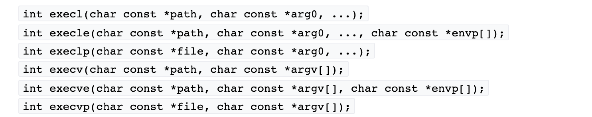

目录 [−]
Go标准库提供了便利的方法，可以很容易地运行外部命令，一般我们会使用os/exec包下的方法实现执行外部命令以及和外部命令交互。os/exec包装了os.StartProcess方法，更方便的进行输入和输出的访问，提供I/O pipe等功能。我会通过两篇文章专门介绍Go启动新进程，执行外部命令的方法，这是第一篇，专门介绍os/exec库。
os/exec库提供方法和POSIX标准中定义的C语言的方法)类似，但是提供了进一步的封装，更方便使用。接下来我会一一给你介绍。

运行一个命令
最简单的运行一个外部命令的方式就是调用Command方法，你需要传入要执行的程序和参数，它会返回一个*Cmd的数据结构，代表了一个执行的外部命令，主要调用它的Run、Output、CombinedOutput方法后这个对象就不能重用了，一般我们也不会重用这个对象，而是在需要的时候新生成一个。
下面这段代码就是执行ls命令，并传给它参数-lah。
1 2 3 4 5
| cmd := exec.Command("ls", "-lah") err := cmd.Run() if err != nil { log.Fatalf("failed to call cmd.Run(): %v", err) }
|
如果你执行这个命令，控制台中并没有任何输出，其实这个命令已经执行了，只不过我们的Go程序并没有捕获和处理输出，所以控制台中并没有任何输出。
Run方法会执行外部命令并等待命令完成，如果命令正常执行，没有错误，返回码为0,那么Run返回的err == nil，那么返回一个*ExitError,有时候你需要读取cmd.Stdout甚至cmd.Stderr以便获取详细的错误信息。
如果你不想等待，那么可以调用Start方法，如果Start成功，Process和ProcessState字段会被设置。你可以检查ProcessState.Exited()判断程序是否退出。如果你想再阻塞等待程序的完成，你可以调用Wait方法。
事实上，Run方法就是利用Start方法和Wait方法实现的：
1 2 3 4 5 6
| func (c *Cmd) Run() error { if err := c.Start(); err != nil { return err } return c.Wait() }
|
显示外部命令的输出
Cmd命令包含输入和输出字段，你可以设置这些字段，实现定制输入和输出：
1 2 3
| Stdin io.Reader Stdout io.Writer Stderr io.Writer
|
如果Stdin为空，那么进程会从null device(os.DevNull)中读取。
如果Stdin是*os.File对象，那么会从这个文件中读取。
如果Stdin是os.Stdin,那么会从标准输入比如命令行中读取数据。
Stdout和Stderr代表外部程序进程的标准输出和错误输出，如果为空，那么输出到null device中。
如果Stdout和Stderr是*os.File对象，那么会往文件中输出数据。
如果Stdout和Stderr分别设置为os.Stdout、os.Stderr的话，会输出到命令行中。
我们改造上一个例子，显示命令输出结果：
1 2 3 4 5 6 7 8
| cmd := exec.Command("ls", "-lah") cmd.Stdout = os.Stdout cmd.Stderr = os.Stderr err := cmd.Run() if err != nil { log.Fatalf("failed to call cmd.Run(): %v", err) }
|
工作路径
默认情况下进程的工作路径是调用这个进程的文件夹，但是你也可以手工指定，比如我们将工作路径指定为根路径：
1 2 3 4 5 6 7 8 9 10
| cmd := exec.Command("ls", "-lah") cmd.Stdout = os.Stdout cmd.Stderr = os.Stderr cmd.Dir = "/" err := cmd.Run() if err != nil { log.Fatalf("failed to call cmd.Run(): %v", err) }
|
外部程序path
Cmd.Path是要执行的程序的路径，如果是相对路径，那么它基于Cmd.Dir计算相对路径。如果程序已经在系统$PATH路径下，那么可以直接写程序名。
1 2 3 4 5 6 7 8 9 10 11
| cmd := exec.Command("/usr/local/go/bin/go", "env") cmd.Stdout = os.Stdout cmd.Stderr = os.Stderr log.Printf("path: %s", cmd.Path) err := cmd.Run() if err != nil { log.Fatalf("failed to call cmd.Run(): %v", err) }
|
设置环境变量
Cmd还有一个字段叫做Env,用来设置进程的环境变量，格式是key=value。
如果Env为空，那么新进程将使用调用者进程的环境变量。
比如下面的例子，我们设置了myvar变量，你可以注释掉cmd.Enc = ...那一行比较一下结果。
1 2 3 4 5 6 7 8 9 10 11
| cmd := exec.Command("bash", "-c", "echo $myvar") cmd.Stdout = os.Stdout cmd.Stderr = os.Stderr cmd.Env = []string{"myvar=abc"} err := cmd.Run() if err != nil { log.Fatalf("failed to call cmd.Run(): %v", err) }
|
底层的Process和ProcessState
在上面我提到过，os/exec是封装的一个便利库，底层它是使用os.StartProcess实现的，所以你可以得到底层的Process对象和ProcessState对象,分别代表进程和进程的状态。
1 2 3 4 5 6 7 8 9 10 11 12 13
| cmd := exec.Command("bash", "-c", "sleep 1;echo $myvar") cmd.Stdout = os.Stdout cmd.Stderr = os.Stderr err := cmd.Start() if err != nil { log.Fatalf("failed to call cmd.Start(): %v", err) } log.Printf("pid: %d", cmd.Process.Pid) cmd.Process.Wait() log.Printf("exitcode: %d", cmd.ProcessState.ExitCode())
|
判断外部命令是否存在
有时候，你需要在执行一个外部命令的时候需要先检查它是否存在，你可以使用LookPath方法。
如果传入参数包含路径分隔符，那么它会基于Cmd.Dir的相对路径或者绝对路径查找这个程序。如果不包含路径分隔符，那么会从PATH环境变量中查找文件。
1 2 3 4 5 6
| path, err := exec.LookPath("ls") if err != nil { log.Printf("'ls' not found") } else { log.Printf("'ls' is in '%s'\n", path) }
|
获取命令结果
Cmd提供了Output()方法，如果命令正确执行，可以得到命令执行结果的bytes:
1 2 3 4 5 6 7 8
| cmd := exec.Command("ls", "-lah") data, err := cmd.Output() if err != nil { log.Fatalf("failed to call Output(): %v", err) } log.Printf("output: %s", data)
|
如果命令出错，错误信息可以通过Stderr获得：
1 2 3 4 5 6 7 8 9
| cmd := exec.Command("ls", "-lahxyz") cmd.Stderr = os.Stderr data, err := cmd.Output() if err != nil { log.Fatalf("failed to call Output(): %v", err) } log.Printf("output: %s", data)
|
组合Stdout和Stderr
如果你想不管出错与否都能一个方法获取输出结果的话，你可以调用CombinedOutput()方法，它会返回正常输出或者错误输出，并且第二个返回err可以指示是否执行出错：
1 2 3 4 5 6 7 8
| cmd := exec.Command("ls", "-lah") data, err := cmd.CombinedOutput() if err != nil { log.Fatalf("failed to call CombinedOutput(): %v", err) } log.Printf("output: %s", data)
|
CombinedOutput方法的实现也很简单，其实就是共享同一个bytes.Buffer实现的。
1 2 3 4 5 6 7 8 9 10 11 12 13
| func (c *Cmd) CombinedOutput() ([]byte, error) { if c.Stdout != nil { return nil, errors.New("exec: Stdout already set") } if c.Stderr != nil { return nil, errors.New("exec: Stderr already set") } var b bytes.Buffer c.Stdout = &b c.Stderr = &b err := c.Run() return b.Bytes(), err }
|
分别读取Stdout和Stderr
了解了CombinedOutput的实现，我们就可以为Stdout和Stderr分别设置bytes.Buffer,来实现独立的读取。
1 2 3 4 5 6 7 8 9 10
| cmd := exec.Command("ls", "-lah") var stdout, stderr bytes.Buffer cmd.Stdout = &stdout cmd.Stderr = &stderr err := cmd.Run() if err != nil { log.Fatalf("failed to call Run(): %v", err) } log.Printf("out:\n%s\nerr:\n%s", stdout.String(), stderr.String())
|
显示命令执行进度
既然我们已经能够使用自己的io.Writer设置Stdout/Stderr,那么我们可以做更丰富的功能。
比如利用curl命令下载一个大的文件，我们可以实时的显示已下载的数据的大小。
1 2 3 4 5 6 7 8 9 10 11 12 13 14 15 16 17 18 19 20 21 22 23 24 25
| cmd := exec.Command("curl", "https://dl.google.com/go/go1.15.6.linux-amd64.tar.gz") var stdoutProcessStatus bytes.Buffer cmd.Stdout = io.MultiWriter(ioutil.Discard, &stdoutProcessStatus) done := make(chan struct{}) go func() { tick := time.NewTicker(time.Second) defer tick.Stop() for { select { case <-done: return case <-tick.C: log.Printf("downloaded: %d", stdoutProcessStatus.Len()) } } }() err := cmd.Run() if err != nil { log.Fatalf("failed to call Run(): %v", err) } close(done)
|
设置Stdin
前面几个例子都是演示处理Output的情况，接下来这个例子演示了如何设置Stdin。
wc命令读取main.go文件，统计它一共有多少行。
1 2 3 4 5 6 7 8 9 10 11 12 13 14 15
| stdin, err := os.Open("main.go") if err != nil { log.Fatalf("failed to open file: %v", err) } cmd := exec.Command("wc", "-l") cmd.Stdin = stdin cmd.Stdout = os.Stdout cmd.Stderr = os.Stderr err = cmd.Run() if err != nil { log.Fatalf("failed to call cmd.Run(): %v", err) }
|
Pipe
你可以将一个命令的输出作为下一个命令的输入，以此类推，将多个命令串成一个管道。
os/exec提供了StderrPipe、StdinPipe、StdoutPipe方法，获取管道对象。
比如下面的命令，将cat main.go的输出作为wc -l命令的输入:
1 2 3 4 5 6 7 8 9 10 11 12 13 14 15 16 17 18 19 20 21 22
| cmdCat := exec.Command("cat", "main.go") catout, err := cmdCat.StdoutPipe() if err != nil { log.Fatalf("failed to get StdoutPipe of cat: %v", err) } cmdWC := exec.Command("wc", "-l") cmdWC.Stdin = catout cmdWC.Stdout = os.Stdout err = cmdCat.Start() if err != nil { log.Fatalf("failed to call cmdCat.Run(): %v", err) } err = cmdWC.Start() if err != nil { log.Fatalf("failed to call cmdWC.Start(): %v", err) } cmdCat.Wait() cmdWC.Wait()
|
首先将管道创建好，然后依次调用各命令的Start方法和Wait方法。
通用的Pipe方法
下面是一个更通用的创建Cmd管道的方法：
1 2 3 4 5 6 7 8 9 10 11 12 13 14 15 16 17 18 19 20 21 22 23 24 25 26 27
| func main() { cmdCat := exec.Command("cat", "main.go") cmdWC := exec.Command("wc", "-l") data, err := pipeCommands(cmdCat, cmdWC) if err != nil { log.Fatalf("failed to call pipeCommands(): %v", err) } log.Printf("output: %s", data) } func pipeCommands(commands ...*exec.Cmd) ([]byte, error) { for i, command := range commands[:len(commands)-1] { out, err := command.StdoutPipe() if err != nil { return nil, err } command.Start() commands[i+1].Stdin = out } final, err := commands[len(commands)-1].Output() if err != nil { return nil, err } return final, nil }
|
bash pipe
如果你通过bash命令执行，你可以使用bash pipe的功能，写起来更简单。
1 2 3 4 5 6 7 8
| cmd := exec.Command("bash", "-c", "cat main.go| wc -l") data, err := cmd.CombinedOutput() if err != nil { log.Fatalf("failed to call pipeCommands(): %v", err) } log.Printf("output: %s", data)
|
孤儿进程
当子进程还没有结束的时候，父进程先结束了，那么此时的子进程就叫做孤儿进程，这个时候子进程的ppid就被设置为了1。
1 2 3 4 5
| cmd := exec.Command("curl", "-o", "go1.15.6.linux-amd64.tar.gz", "https://dl.google.com/go/go1.15.6.linux-amd64.tar.gz") err := cmd.Start() if err != nil { log.Fatalf("failed to call Run(): %v", err) }
|
当主程序退出时，这个curl子进程还会一直下载，它的ppid被设置为了1，你可以使用ps查看进程信息，比如在Mac中：
1
| ps xao pid,ppid,pgid,sid,comm | grep curl
|
程序退出时Kill子进程
如果我们想在程序退出的时候Kill掉它启动的子进程，那么一个比较笨的办法就是得到子进程的 Process对象，然后调用它的Kill方法将其杀掉。但比较遗憾的是它不能把孙进程杀掉。
对于Linux系统，你可以通过下面的设置将孙进程也杀掉：
1 2 3 4 5 6
| cmd := exec.Command("curl", "-o", "go1.15.6.linux-amd64.tar.gz", "https://dl.google.com/go/go1.15.6.linux-amd64.tar.gz") cmd.SysProcAttr = &syscall.SysProcAttr{Pdeathsig: syscall.SIGKILL} err := cmd.Start() if err != nil { log.Fatalf("failed to call Run(): %v", err) }
|
或者更通用的使用下面的设置:
1 2 3 4 5 6
| cmd := exec.Command("curl", "-o", "go1.15.6.linux-amd64.tar.gz", "https://dl.google.com/go/go1.15.6.linux-amd64.tar.gz") cmd.SysProcAttr = &syscall.SysProcAttr{Setpgid: true} err := cmd.Start() if err != nil { log.Fatalf("failed to call Run(): %v", err) }
|
see https://groups.google.com/g/golang-nuts/c/XoQ3RhFBJl8
将父进程打开的文件传给子进程
除了标准输入输出0,1,2三个文件外，你还可以将父进程的文件传给子进程，通过Cmd.ExtraFiles字段就可以。
比较常用的一个场景就是graceful restart,新的进程继承了老的进程监听的net.Listener,这样网络连接就不需要关闭重打开了。
比如最早介绍go graceful restart技术的文章之一Graceful Restart in Golang的代码：
1 2 3 4 5 6 7 8 9 10 11 12 13 14
| file := netListener.File() path := "/path/to/executable" args := []string{ "-graceful"} cmd := exec.Command(path, args...) cmd.Stdout = os.Stdout cmd.Stderr = os.Stderr cmd.ExtraFiles = []*os.File{file} err := cmd.Start() if err != nil { log.Fatalf("gracefulRestart: Failed to launch, error: %v", err) }
|